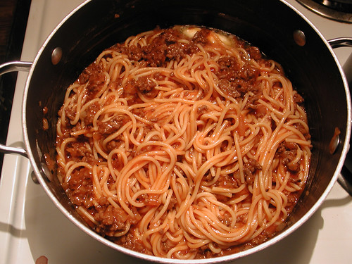

Sad Spaghet

Got like $4? then you too can eat!
Ingredients
- Box of spaghetti
- Jar of pasta sauce or ketchup if you're already drunk
- Water, clean if possible
Steps
- Boil water, especially if you couldn't get any that was clean
- Once boiling, add the pasta and stir occasionally for 9 minutes or 10 minutes if your teeth are weak
- While the pasta cooks, add pasta sauce to a small sauce pan and cook over low heat, stirring frequently to avoid being splashed by scalding hot sauce, unless you're into that, no judgement
- Drain pasta and add sauce
- Eat directly from the pan like a rat
Home